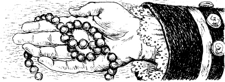

7
Con đường
Ba ngày đã trôi qua. Fort William Henry đã bị thiêu rụi. Những người lính Pháp đã biến mất. Những người bản địa đã biến mất. Xác của nhiều người lính Anh, phụ nữ và trẻ em nằm trên mặt đất.
Vào buổi tối, năm người đàn ông đi xuyên qua khu rừng. Munro, Duncan, Hawk-eye, Chingachgook và Uncas đang tìm kiếm Cora và Alice. Họ thấy xác chết của nhiều người Anh. Năm người đàn ông rất buồn và tức giận.
Đột nhiên, Uncas hét lên với những người khác, "Nhìn kìa!"
Anh ta có một mảnh vải nhỏ trong tay.
Munro nói, "Đó là một mảnh váy của Cora!"
Uncas thấy những dấu chân trên mặt đất, gần một cái cây.
Anh ta nói, "Ba người và một con ngựa đã đứng ở đây."
Sau đó Chingachgook tìm thấy sợi dây chuyền của Alice. Anh ta cũng tìm thấy một mảnh váy khác của Cora.
Duncan cầm lấy sợi dây chuyền. Anh mỉm cười. Anh nói, "Alice còn sống."

Hawk-eye nói, "Cô Cora đã để lại một dấu vết. Cô ấy đã để lại nhiều mảnh váy. Chúng ta có thể lần theo dấu vết này. Nhưng chúng ta phải đi thật nhẹ nhàng. Magua đang ở cùng họ."
Hawk-eye nói, "Nhưng đã muộn rồi. Chúng ta sẽ ăn chút gì đó. Chúng ta sẽ ngủ ở đây đêm nay. Ngày mai chúng ta sẽ lần theo dấu vết của cô Cora."

Sáng sớm hôm sau, Hawk-eye đánh thức các sĩ quan người Anh và người Mohican.
Năm người đàn ông lần theo dấu vết của Cora. Nó dẫn họ đến Hồ Horican. Uncas và Chingachgook tìm thấy một chiếc xuồng trong đám cỏ gần hồ.
Năm người đàn ông lên xuồng. Người Mohican chèo dọc theo hồ.
Sau nửa giờ, Uncas nói khẽ.
Anh ta nhìn vào một hòn đảo nhỏ phía trước họ và nói, "Khói."
Hawk-eye nói, "Khói từ lửa trại. Và có hai chiếc xuồng."
Đột nhiên, một số người Huron chạy ra khỏi những cái cây trên đảo. Họ lên hai chiếc xuồng.
Duncan nói, "Chúng đang đuổi theo chúng ta. Chèo nhanh hơn!"
Hawk-eye nói, "Không! Đừng chèo nữa, Chingachgook. Tôi sẽ bắn chúng." Và anh ta nâng khẩu súng dài của mình lên.
Anh ta bắn. Một người Huron ở chiếc xuồng đầu tiên ngã xuống hồ. Những người Huron dừng hai chiếc xuồng lại. Họ không đuổi theo nữa.
Chingachgook và Uncas lại bắt đầu chèo. Năm người đàn ông tiếp tục đi. Họ đi về phía bắc, lên hồ.

Mục lục
- Bìa
- Tiêu đề
- Nội dung
- Ghi chú về tác giả
- Ghi chú về câu chuyện này
- Những nhân vật trong câu chuyện
- 1 Hai người chị em
- 2 Lạc trong rừng
- 3 Trận chiến ở thác nước của Glen
- 4 "Tôi là Häuptling của người Huron"
- 5 Pháo đài William Henry
- 6 ‘Khi nào cứu viện đến
- 7 Con đường mòn
- 8 Người thầy thuốc
- 9 Trong ngôi làng của người Huron
- 10 Gấu
- 11 Häuptling già
- 12 Mohican cuối cùng
- Bản quyền